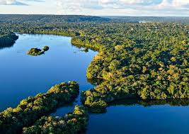
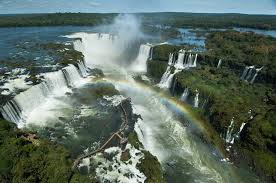
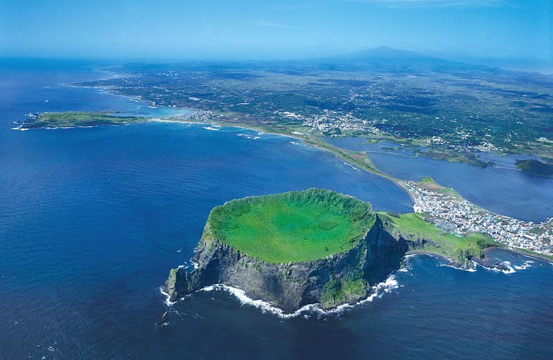

As 7 Maravilhas Naturais do Mundo são formadas por impressionantes fenômenos naturais que destacam a grandiosidade e diversidade da Terra. Essas maravilhas são reconhecidas por sua beleza e importância ecológica e geológica. A seleção inclui uma variedade de locais, desde florestas tropicais e cachoeiras até ilhas vulcânicas e desertos, cada um representando um aspecto único da natureza. A lista visa destacar a beleza e a importância desses locais para a biodiversidade e o equilíbrio ambiental global. A seleção dessas maravilhas é uma forma de celebrar e preservar a incrível riqueza natural do nosso planeta.
A Amazônia é a maior floresta tropical do mundo, localizada na América do Sul e abrangendo partes de nove países, com a maior parte no Brasil. Conhecida por sua biodiversidade incomparável, a região abriga milhares de espécies de plantas, animais e insetos, muitas das quais ainda não foram totalmente estudadas. Além de seu papel crucial na regulação do clima global e no ciclo da água, a Amazônia enfrenta ameaças significativas, como desmatamento e mudanças climáticas, que comprometem sua vitalidade e o equilíbrio ambiental global.
As Cataratas do Iguaçu, localizadas na fronteira entre o Brasil e a Argentina, são um dos maiores sistemas de quedas d'água do mundo, com cerca de 275 cachoeiras espalhadas ao longo de 2,7 quilômetros do Rio Iguaçu. A mais icônica delas é a Garganta do Diabo, uma impressionante queda de 80 metros de altura que cria uma vasta cortina de água. Rodeadas por uma densa floresta tropical, as cataratas são um Patrimônio Mundial da UNESCO e atraem milhões de visitantes anualmente devido à sua beleza espetacular e à rica biodiversidade do Parque Nacional do Iguaçu. Além de seu valor estético, desempenham um papel ecológico significativo e são um símbolo da natureza exuberante da região.
A Ilha Jeju, localizada no sul da Coreia do Sul, é uma maravilha natural conhecida por sua paisagem vulcânica espetacular e biodiversidade. Dominada pelo vulcão extinto Hallasan, a ilha oferece uma variedade de terrenos, incluindo montanhas, cachoeiras e campos de lava. Jeju é famosa por suas formações geológicas únicas, como tubos de lava e crateras, além de suas praias deslumbrantes. Como um popular destino turístico, a ilha combina beleza natural com um rico patrimônio cultural e é um importante local de pesquisa geológica e conservação ambiental.
